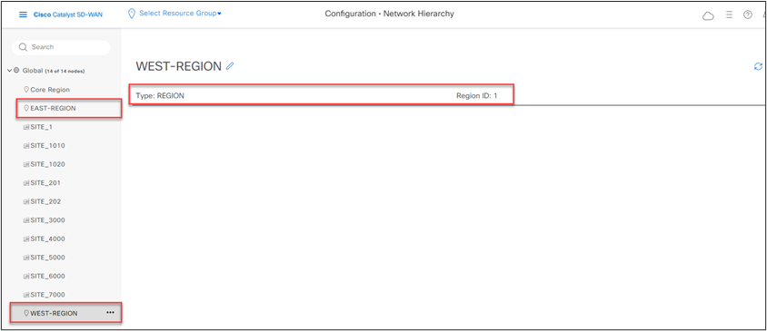
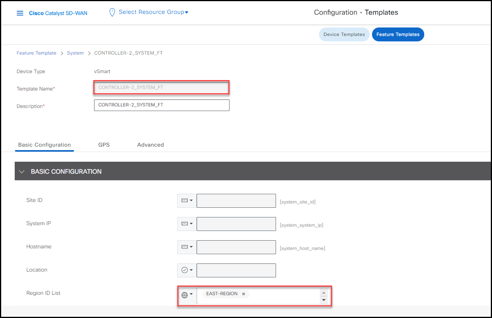
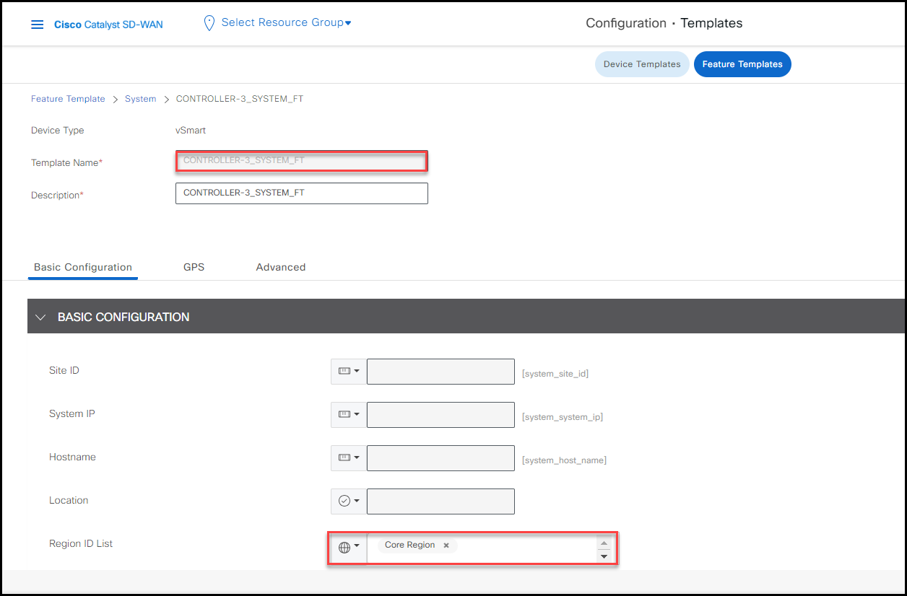
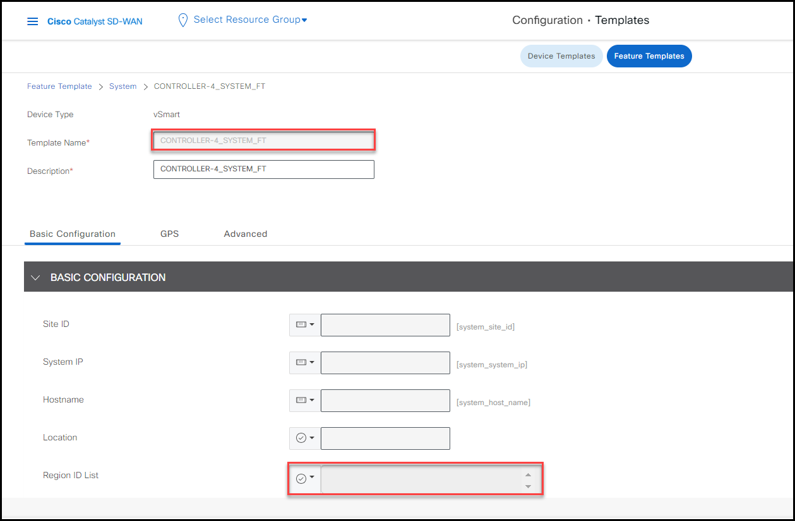
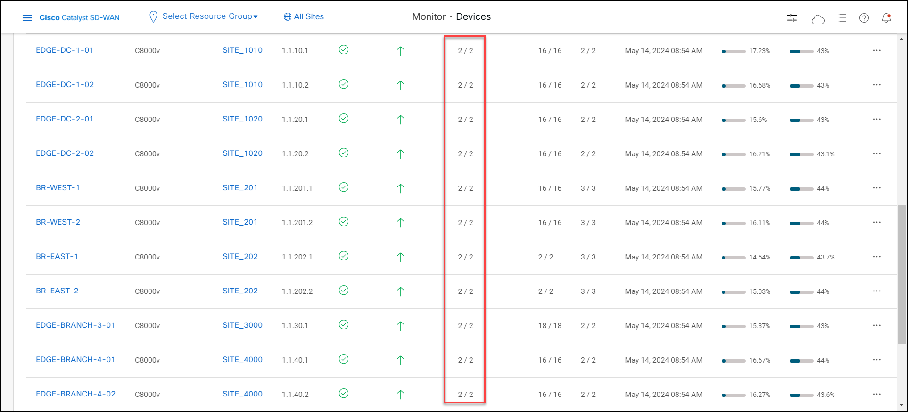

Task 2 - Prepare MRF Migration
In this task, you will perform the following prerequisites before migrating from flat SD-WAN fabric to MRF.
- Enable MRF
- Creat regions
- Provision Controllers for regions
Step 1: Enable MRF
In this step, you will enable MRF on vManage.
Info
The MRF feature has been pre-enabled for this lab. This section is for your review of the workflow
- Click SD-WAN Manager navagination bar, go to Administration > Settings. and confirm that the Multi-Region Fabric setting is enabled (By default is disabled).

Step 2: Create Regions
After enabling MRF, the subsequent step involves creating the regions.
For this lab, we'll establish two regions: EAST-REGION and WEST-REGION. Upon creation, the system automatically assigns a Region ID.
In this lab, WEST-REGION has been assigned with Region ID 1, and EAST-REGION has been assigned Region ID 2.
Info
The Regioins has been pre-enabled for this lab. This section is for your review of the workflow
- Go to Configuration > Network Hierarchy and you should see that the EAST-REGION and WEST-REGION have been pre-configured.

Step 3: Provision Controllers for Regions
In MRF, vSmart controller is assigned to specific region. Based on the size of the deployment, the vSmart controller can be dedicated for a region or for a group of regions. For this lab, you will have controllers assigned as shown below:
- Controller-1 (1.1.1.3) as dedicated Controller for WEST-REGION (1).
- Controller-2 (1.1.1.4) as dedicated Controller for EAST-REGION (2).
- Controller-3 (1.1.1.5) as dedicated Controller for the Core Region (0).
- Controller-4 (1.1.1.6) is the default/flat existing Controller serving the whole overlay.
Info
The controllers have been pre-configured for this lab. This section is for your review of the workflow
-
The controller is assigned to the region by configuring Region ID List on controller System feature template.
-
Go to Configuration > Template > Feature Templates, type SYSTEM_FT in the seach field, and you will see 4 pre-configured Controllers feature templates, one for each controller.

-
Click the Devices Attached of each controller system ft, you will see the controllers are attached to the feature templates as planned.
- CONTROLLER-1_SYSTEM_FT for Controller-1 (1.1.1.3)
- CONTROLLER-2_SYSTEM_FT for Controller-1 (1.1.1.4)
- CONTROLLER-3_SYSTEM_FT for Controller-1 (1.1.1.5)
- CONTROLLER-4_SYSTEM_FT for Controller-1 (1.1.1.6)
-
Click the ... to view each of the controller system feature template.
CONTROLLER-1_SYSTEM_FT

CONTROLLER-2_SYSTEM_FT

CONTROLLER-3_SYSTEM_FT

CONTROLLER-4_SYSTEM_FT

-
After assigning distributed controllers for regions, all WAN Edges in the overlay remain un-assigned to any region, with **Controller-4(1.1.1.6) serving as the default controller for the entire overlay. You can verify that by checking the controller control connections of all WAN Edges.
-
Go to Monitor > Devices and look the vSmart Control column.

Info
If output shows 0 control connection, please perform Rediscovery Network to show the correct outputs.
- You can also verify this by going to Monitor > Devices; select a device and then look up for OMP peers with the Real Time function.
For instance, EDGE-BRANCH-3-01 shows only one OMP peer with Controller-4 showing Region ID as None.